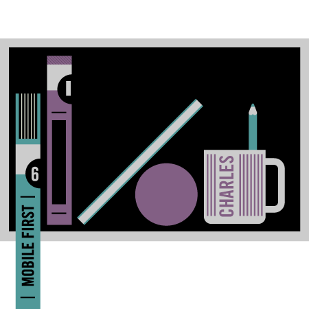

I recently took a trip to New York city just after reading the book "Mobile First" by Luke Wroblewski. During the commute between Queens and Manhattan, I saw lots of folks on their mobile devices. And while I didn't need this trip to convince me that Mobile is exploding, it sure made the fact even clearer.
The 6th book in the design series by A Book Apart, "Mobile First" explores the reasons and strategy for putting mobile web design before all else. Here are a few of my favorite points.
Links. Each time a web link is shared online or referenced in a native app, it is opened in a web browser. So if you have your native Facebook app open on your mobile device and you click a link, you are taken out to a browser that now displays the website. Has this site prepared its content for mobile? Probably not.
Small Space. The small screen space of mobile forces designers, developers, and clients to consider to what matters most. You have to give your customers exactly what they need and want. No room for useless information.
Be quick. Mobile forces you to think of building for quick load time. Make things fast, users will go away if you don't. Use sprites, minify CSS and javascript files, style in CSS not images, etc.
Great, you've simplified your product, considered what content matters most, and made it load fast. Now apply this to the desktop experience. That's "mobile first" in a nutshell. Oh, and...if we were living back in the 80's, the title to this book would most likely be "pager first". Someone just beeped me, gotta go.